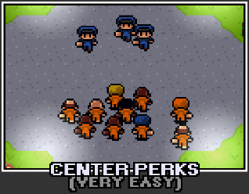
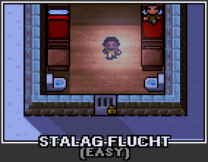
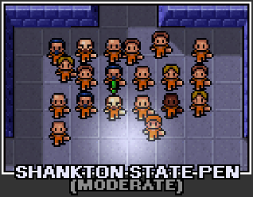
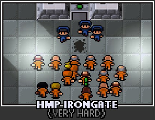

Main Prisons
Center perks
Шановний [ім'я]. Ласкаво просимо до Центру Перкс - найзручнішої в'язниці низької безпеки в окрузі. Від імені персоналу тут бажаємо вам щасливого та спокійного візиту! Якщо вам набридне безкоштовне кабельне телебачення, ми пишаємось багатьма іншими захоплюючими заходами навколо майданчика.
~ Охоронець [джеден] про приїзд у тюрму
Центр Перкс (Перевод назви карти Center Perks) - це перша і найпростіша карта, присутні в грі, що її отримав Сталаг Флухт .
Stalag Flucht
Якщо ви шукаєте проходження цьої карти проходження буде в кінці
Stalag Flucht - друга в'язниця в грі The Escapists . Це в'язниця складніше першої тим що паркан під напругою.
Shankton State
Ласкаво просимо до штату Пен Шенктон, вашого нового будинку в осяжному майбутньому. Оскільки я був начальником, у нас було декілька зухвалих втечі, але вони були негайно зібрані назад і покарані. На моєму годиннику ніхто не тікає, тому не отримуйте ніяких ідей! Якщо ви забудете будь-яке з правил тут, охоронні кийки будуть тільки надто раді нагадати вам!
~ Охоронець "ім'я" після прибуття до в'язниці
Jungle Compound
Ласкаво просимо до джунглів! Суспільство оголосило вас загрозою, тому ми віддалили вас від будь-яких слідів. Перш ніж навіть розважитись думкою про втечу, дозвольте нагадати, що навіть якщо за допомогою якогось віддаленого шансу ви проїдете повз огорожу, стіну, перимітерні джипи та сторожовий пропускний пункт, в дикій природі за її межами немає жодного вцілілого.
~ Університет Джим Стерлінг по прибуттю в'язниці
Jungle Compound - четверта карта, присутня в грі, перед якою перейшов штат Шенктон, а наступник Сан Панчо . Він має труднощі середньої тяжкості, що є більш складним, ніж більшість. На карті представлена тюрма на відкритому повітрі, оточена густими джунглями. Ця карта може базуватися на таборі в'язниць Патет Лаос в Лаосі. В'язниця утримує 10 ув'язнених , 5 офіцерів та 4 охоронців вежі. У в'язниці також є склад із листом металу та деревини . У кожній камері є 2 ув'язнених. Ви можете виявити навколишні джунглі занадто товсті для навігації, що змусить шукати інші шляхи втечі. Біля південного краю карти знаходиться блокпост із воротами та озброєною охороною. Щоб вас звільнили, ви повинні надати офіцеру підписані документи . Після затвердження ворота відкриваються і ваш втечу завершено. Можна також просто створити тунель, який йде під ворота (під час носіння охоронної форми), оскільки охоронець не помітить, що ви копаєте.
Jungle Compound також має власну унікальну музику у вільний час.
San Pancho
Це горезвісний Сан-Панчо, найжорсткіша і найпростіша найгустіша в'язниця на південь від кордону. Механічна спека та клаустрофобічні умови тут перетворюють в'язнів на злість та жорстокість. Навіть охоронці не вступають.
~ Охоронець [ім'я] по прибуттю в'язниці
Сан-Панчо - п’ята карта, присутня в основній грі, перед якою з’єднання джунглів, а на зміні HMP-Irongate . В'язниця вміщає 16 ув'язнених (включаючи себе), має 10 гвардійців, які ніколи не патрулюють у складі, крім 3 для рутинних, має електричну огорожу навколо в'язниці та джип, який патрулює зовні. У ньому утримується 4 ув'язнених на камеру. Більшу частину часу у вашій камері є незайнятий стіл. В'язниця заснована на вигаданому федеральному Пенетенсіарія федеральному де Сона з американського телешоу " В'язниця-перерва". Легко відійти від речей охоронців не сподобається, наприклад, відколи стін, оскільки вони не патрулюють територію, окрім підпрограм. Захищеність Сан-Панчо дуже висока, оскільки у нього є стіна по периметру товщиною 2 блоків і міни між ними, що робить втечу над землею неможливим. У випусках Mobile / Console з HMP-Irongate, що не працює ( Камера лише в половині камер і охоронці використовують лише дубинки), обидві в'язниці можна знайти однаково важко. У Сан-Панчо також є своя унікальна музика у вільний час.
Htm-inorgate
Слухай тут маго. Ви знаєте, чому ви тут, тому немає сенсу плакати про це. Як правило, побоюються як найвищої в'язниці безпеки коли-небудь, HMP Irongate - це те, де ви переживете решту свого безглуздого існування. Втеча ви кажете? Не смій мене! Жменька ідіотів, які намагалися зустріти водянисту смерть, намагаючись плисти з острова. Все-таки підборіддя, так?
~ Охоронець Яден про прибуття до в'язниці